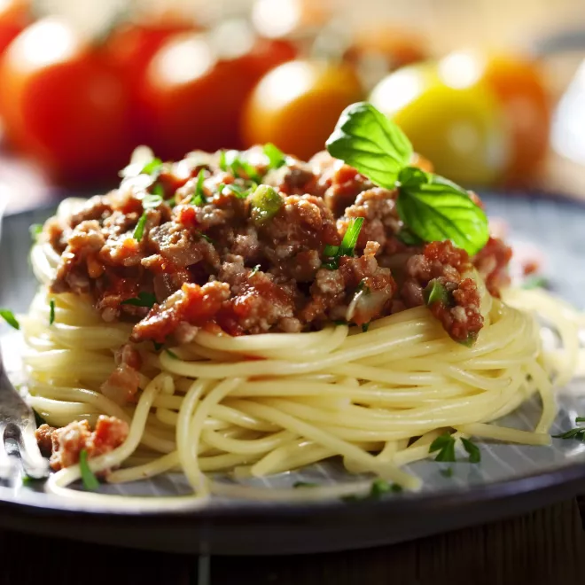

Spaghetti bolognaise

Ingredienten
- 500g Spaghetti
- 5g Gedroogde tijm
- 2 laurierblaadjes
- 1 scheutje porto
- 350g gemengd gehakt
- 1 blijke (400g) tomatenblokjes
- 2 wortelen
- 1 ui
- 50gr parmezaan (gemalen)
- 200ml water met 2 bouillon blokjes
- olijfoli
- 2 teentjes knooflook
- peper
- zout
Bereiding
- 1 Snipper 1 ui fijn. Snij de wortelen in plakjes. Pel en plet 2 teentjes knoflook.
- 2 Bak het gehakt rul in een beetje olie. Doe er de ui, de wortelen en de knoflook bij. Schep goed om.
- 3 Voeg er de tomatenblokjes, de bouillon, de oregano, tijm, laurier en een scheutje porto aan toe.
Dek af en laat 40 minuten sudderen tegen de kook aan, of tot de wortelen beetgaar zijn.
- 4 Kook de pasta beetgaar in gezouten water. Giet af.
- 5 Breng de saus op smaak met peper en zout. Vermeng meteen met de pasta. Serveer met de kaas in een kommetje apart.